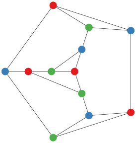

In this post we introduce gvpr a graph stream editor which belongs to the Graphviz software library. As this is our first post about Graphviz and gvpr is, perhaps, not the most obvious place to start we will begin this post with a demonstration of another program from Graphviz, gc. After that we will introduce gvpr and show how gc can be implemented in gvpr.
Our main interest in gvpr is related to last week’s post in which we were faced with the problem of applying a colouring found by Culberson’s colouring programs to a file containing graph data in DOT format. In that post we found an ad-hoc solution based on a Bash script and Sed. The approach we use here, based on gvpr, is much nicer but still might not be the best possible solution.
Counting Components with gc
GNU Coreutils, a collection of programs available on any Linux or Unix-based operating system, contains a program wc which is used to count words, lines, or characters in a document. As an example of using wc, here we calculate the number of lines, words and characters in the man page for wc.
$ man wc | wc
70 252 2133The Graphviz program, gc, can be thought of as a graph analogue of wc. If a graph is stored in DOT format then we can get basic metric information about the graph by invoking gc. For example, here we calculate the number of nodes in the Tutte graph.
$ curl -s https://raw.githubusercontent.com/MHenderson/graphs-collection/master/src/Classic/Tutte/tutte.gv\
| gc -n
46 %1 (<stdin>)To calculate the number of edges we change the -n switch to -e:
$ curl -s https://raw.githubusercontent.com/MHenderson/graphs-collection/master/src/Classic/Tutte/tutte.gv\
| gc -e
69 %1 (<stdin>)As with wc, gc can be used with multiple graphs and it will provide total counts over all input graphs.
$ curl -s https://raw.githubusercontent.com/MHenderson/graphs-collection/master/src/Classic/Tutte/tutte.gv\
https://raw.githubusercontent.com/MHenderson/graphs-collection/master/src/Classic/Frucht/frucht.gv\
https://raw.githubusercontent.com/MHenderson/graphs-collection/master/src/Classic/Heawood/heawood.gv\
| gc -e
69 %1 (<stdin>)
18 %141 (<stdin>)
21 %179 (<stdin>)
108 totalgc can do some other things beside count nodes and vertices. It can also count components and clusters (which are subgraphs that are labelled as clusters). To do anything more sophisticated than merely count objects belonging to a graph we need to write another program. As we are processing text data, Sed and AWK are good choices for implementation language. Even better, though, is gvpr which has a similar approach but is designed to process data in DOT format.
gvpr - The Graph Stream Editor
gvpr is an AWK for graphs in DOT format. It is a stream editor which can be easily customised to process graph data in user-defined ways.
Implementing gc in gvpr
There are several simple examples of programs written in gvpr in the gvpr manual. One of those programs is the following gc-like program implementation. As an introduction to gvpr, in this section we will explain how this program works. The entire source code is shown below.
BEGIN { int n, e; int tot_n = 0; int tot_e = 0;}
BEG_G {
n = nNodes($G);
e = nEdges($G);
printf("%d nodes %d edges %s\n", n, e, $G.name);
tot_n += n;
tot_e += e;
}
END { printf("%d nodes %d edges total\n", tot_n, tot_e) }If the above code is in a file called gv and that file is located in a folder on one of the paths in the GPRPATH environment variable then we can invoke it in by calling gvpr with the filename gv as the argument of the -f switch.
$ curl -s https://raw.githubusercontent.com/MHenderson/graphs-collection/master/src/Classic/Tutte/tutte.gv\
https://raw.githubusercontent.com/MHenderson/graphs-collection/master/src/Classic/Frucht/frucht.gv\
https://raw.githubusercontent.com/MHenderson/graphs-collection/master/src/Classic/Heawood/heawood.gv\
| gvpr -fgc
46 nodes 69 edges %1
12 nodes 18 edges %141
14 nodes 21 edges %179
72 nodes 108 edges totalThe program works in the following way. gvpr processes the input graphs one at a time. Before doing any processing, though, it calls the action of the BEGIN clause. For our program this merely has the effect of initialising some variables we will use to count edges and vertices.
Now gvpr moves onto processing the first graph. Once it has processed the first graph it moves onto the second, and so on, until the last graph has been processed at which point it calls the action of the END clause. In our gc program this prints out the total number of edges and vertices over all of the graphs.
When gvpr processes each graph it first sets the variable $ to the current graph and then it calls the action of the BEGIN_G clause. It will then do some processing of nodes and edges (explained in the next paragraph) before calling the action of the END_G clause after each graph. In our case, when a graph is processed by gvpr we count the number of edges and vertices, print those numbers out and add them to the total edge and vertex count.
The innermost processing that gvpr does is to consider every node and edge. Any number of N and E clauses can be implemented to create some specific behaviours at nodes and edges. For example, we might provide actions to weight a node or edge with a particular value or other or we might set attributes, like the position of a vertex according to the result of a layout algorithm.
The N and E clauses both support predicate-action pairs. This means that the action will only be run if the predicate belonging to the predicate-action pair is satisfied as well as the main N or E clause (which is only true when we have encountered a node or edge).
N [ predicate ]{ action }
E [ predicate ]{ action }In the next section we consider a different application of gvpr. We show how it can be used to take the output of a colouring from ccli and apply it to the vertices of a graph which can then be passed to one of the layout programs for drawing.
Colouring Vertices with gvpr
Our implementation of applying a colouring to a graph in DOT format in gvpr is just three lines of code.
BEG_G { setDflt($, "N", 'colorscheme', 'set13') }
N { aset($, 'style', 'filled') }
N { aset($, 'color', ARGV[$.name]) }The basic structure is familiar from the gc-like implementation above. We have three clauses, a BEG_G clause and two N clauses. The action for each clause is a call to one of two different functions setDflt and aset.
The setDflt function sets the default value of an attribute . As we call this function in the body of the BEG_G clause the built-in variable $ is set to the current graph. In this case we are setting the default value of the colorscheme attribute for nodes to the set13 colour scheme. Graphviz provides several different colour schemes. The following quotation from the gvpr manual explains how colour schemes work.
This attribute specifies a color scheme namespace. If defined, it specifies the context for interpreting color names. In particular, if a color value has form “xxx” or “//xxx”, then the color xxx will be evaluated according to the current color scheme. If no color scheme is set, the standard X11 naming is used. For example, if colorscheme=bugn9, then color=7 is interpreted as “/bugn9/7”.
The aset function sets the value of an attribute. As we use the aset function in the body of actions that belong to N clauses we are going to be setting attributes of nodes. When gvpr is processing nodes is assigns the current node to the built-in variable $. So the syntax aset($, x, y) assigns the value y to the attribute x.
We set two attributes for every node. We set the style attribute to filled so that when the output graph is rendered by one of the drawing programs in Graphviz the nodes will be drawn as filled-in shapes, making the colour visible. The other attribute we set for each node is the color. In this case, the color is set to a value which is determined by the corresponding value of ARGV.
To use our program, call gvpr with the colour program as the argument of the -f switch. Then to provide the vertex colouring we pass a string to gvpr as the argument of the -a switch (this is then available inside of a gvpr program as the value of the ARGV variable.
gvpr -f colour -a '1 2 3 1 2 3 2 3 1 3 1 2' frucht.gv > frucht.gv.colNow we can combine the colouring with drawing by the twopi program.
gvpr -c -f colour -a '1 2 3 1 2 3 2 3 1 3 1 2' frucht.gv |\
twopi -s\
-Tsvg\
-Gsize=4,4\!\
-Groot=3\
-Nwidth=0.3\
-Nfixedsize=true\
-Nlabel=\
-Nshape=circle\
-o frucht.svgThe resulting drawing with coloured nodes looks like this:

References
For more information about gvpr, a good reference is the man documentation.